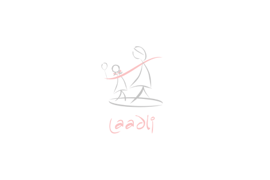

-
2002
Population First was registered as Public Charitable Trust
 -
2005
Laadli campaign launched 1700 college students participated in Laadli Youth Flash, the first ever Flash Mob organized in India
-
2007
Maadhyam –Youth for change college based programme launched Laadli community based intervention was launched through Ganeshotsav
-
2008
Laadli Media Awards for Gender Sensitivity launched National Creative Excellence Awards launched
-
2009
Dr.Sharada invited by US Government on International Visitor Fellowship Program to represent India on the theme “Role Of NGOS In Addressing Global Gender Issues" Million signature campaign carried out
-
2010
Laadli invited to make a presentation at Portfolio night and at the Ad Asia event The book “Missing Half the Story – Journalism as if Gender Matters” was released on May 11, 2010
-
2011
Dr A.L. Sharada, was co-opted on to the PCPNDT State Supervisory Board Youth Initiative “Madhyam” was re-launched as “Laadli Change Makers Clubs”
-
2011
Laadli Fellowhips announced which became annual feature since then Laadli organized a consultation with creative directors of General Entertainment Channels
-
2012
Safe Abortion Advocacy Initiative was launched in collaboration with Ipas
-
2014
Gender scoring of ads introduced in Campaign India Magazine
-
2016
An ABBY for gender sensitivity introduced
-
2017
Laadli Media Awards go international covering South Asia Region
-
2003
Thane Field level intervention was launched
-
2004
First exercise of village micro-planning in two villages, Nandgaon and Talwada carried out
-
2007
Thane project re-launched as AMCHI
-
2009
‘Amcha Gaon, Amchi Shaan' campaign launched in villages which ran for five years
-
2010
Population First invited to be a member of the Block level Planning and Monitoring Committee under NRHM
-
2011
School in Development (SID) project launched in 6 villages and has covered 60 schools and 2500 students till date Launch of AMCHI Livelihood project in 15 villages. Currently it is covering 55 villages 55 women groups and 500 women
-
2013
Interventions addressing Child Malnutrition integrated into the AMCHI Programme at Savroli village. Currently it is being implemented in 56 villages benefitting 2500 children, 5000 adolescent girls and 9300 women
-
2017
Population First invited to be a member on the District Level Committee on Nav Sanjeevani programme for addressing Malnutrition in Tribal areas of Maharashtra
-
2018
Partnership with JSW CSR initiatives forged